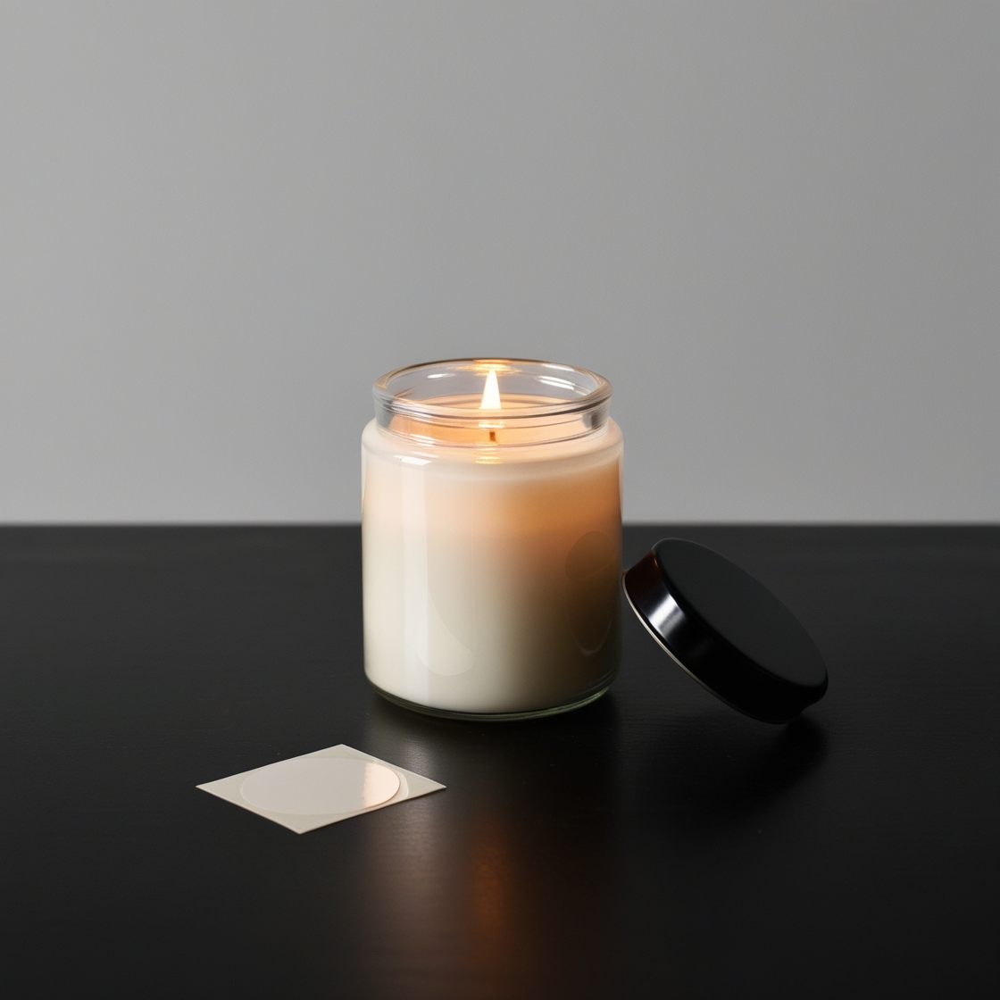

U srcu naše male zanatske radnje, Svijeća Craft, pažljivo kreiramo svijeće u malim serijama, čuvajući esenciju ručne izrade u svakom komadu. Naši mirisi i nazivi su nadahnuti čudesima prirode koja nas okružuju, prenoseći djelić te magije u vaš dom.
O nama


Predani smo korištenju samo najkvalitetnijih sastojaka. Naše svijeće izrađujemo od sojinog voska, ekološki prihvatljivog izbora koji gori čisto i dugo. Obogaćujemo ih pažljivo odabranim prirodnim esencijalnim uljima, stvarajući jedinstvene mirisne kompozicije koje bude osjetila i stvaraju ugođaj.
Bilo da želite unijeti toplinu u svoj dom, stvoriti nezaboravnu atmosferu za poseban događaj ili jednostavno uživati u trenucima opuštanja, naše svijeće su tu da vam u tome pomognu. Svaka svijeća je više od izvora svjetlosti – to je poziv na putovanje osjetilima, trenutak mira u užurbanom svijetu.
Dopustite da vas naše pažljivo birane svijeće vode kroz godišnja doba, raspoloženja i sjećanja. S Svijeća Craft-om, svaki trenutak postaje prilika za stvaranje topline i ugođaja.
O nama
Svijeće Craft-shop je mjesto gdje se strast prema zanatskoj izradi susreće s prirodnim ljepotama. Svaka svijeća koju stvaramo nosi sa sobom priču inspiriranu čudesima prirode koja nas okružuje.
U srcu naše male radionice, svaki komad je rezultat pažljivog rada i strasti prema ručnoj izradi. Korištenjem samo najboljih prirodnih sastojaka, stvaramo proizvode koji unose toplinu i miris prirode u vaš dom.
Predani smo korištenju ekološki prihvatljivih materijala. Naše svijeće izrađujemo od sojinog voska, koji je biorazgradiv i gori duže, bez štetnih emisija. Svaka svijeća je obogaćena prirodnim esencijalnim uljima, stvarajući jedinstvene mirisne kompozicije.
Bez obzira tražite li savršen poklon, želimo unijeti toplinu u vaš dom ili uživate u trenucima opuštanja, Svijeće Craft-shop je tu da stvori atmosferu koja će oduševiti vaša osjetila.
Naša misija je jednostavna: pružiti vam svijeće koje su više od običnog proizvoda. Svaka svijeća je prilika da vas povežemo s prirodom, godišnjim dobima i vašim najdražim trenucima.